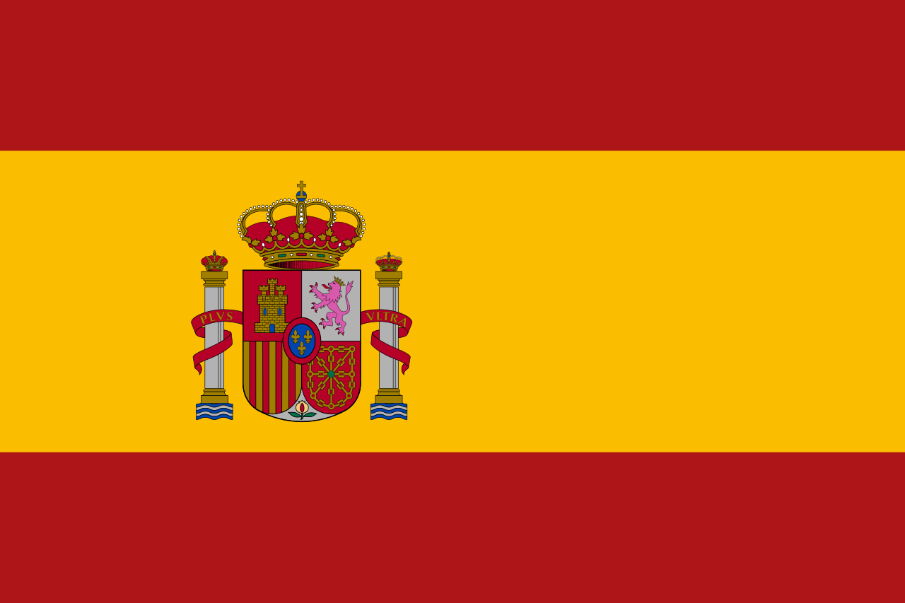

La Liga Standings
| Position | Team | Mp | Pts | Top scorer | Gls/90 |
|---|
| 1 | Barcelona | 27 | 67 | Lamine Yamal-14 | 2.67 |
| 2 | Real Madrid | 27 | 63 | Kylian Mbappé-23 | 2.07 |
| 3 | Atlético Madrid | 27 | 54 | Alexander Sørloth-10 | 1.7 |
| 4 | Villarreal | 27 | 54 | Alberto Moleiro-9 | 1.85 |
| 5 | Real Betis | 27 | 43 | Cucho-8 | 1.56 |
| 6 | Celta Vigo | 27 | 40 | Borja Iglesias-11 | 1.37 |
| 7 | Espanyol | 27 | 37 | Kiké,Pere Milla-6 | 1.26 |
| 8 | Real Sociedad | 27 | 35 | Mikel Oyarzabal-11 | 1.48 |
| 9 | Getafe | 27 | 35 | Mauro Arambarri-5 | 0.85 |
| 10 | Athletic Club | 27 | 35 | Gorka Guruzeta-6 | 1.11 |
| 11 | Osasuna | 27 | 34 | Ante Budimir-13 | 1.19 |
| 12 | Valencia | 27 | 32 | Hugo Duro-8 | 1.11 |
| 13 | Rayo Vallecano | 27 | 31 | Jorge de Frutos-10 | 1.0 |
| 14 | Sevilla | 27 | 31 | Akor Adams-7 | 1.3 |
| 15 | Girona | 27 | 31 | Vladyslav Vanat-9 | 1.04 |
| 16 | Alavés | 27 | 27 | Lucas Boyé-9 | 0.93 |
| 17 | Elche | 27 | 26 | André Silva,Rafa Mir-7 | 1.3 |
| 18 | Mallorca | 27 | 25 | Vedat Muriqi-18 | 1.15 |
| 19 | Levante | 27 | 22 | Karl Etta Eyong-5 | 1.07 |
| 20 | Oviedo | 27 | 18 | Federico Viñas-5 | 0.63 |